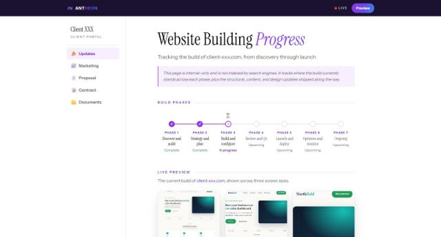
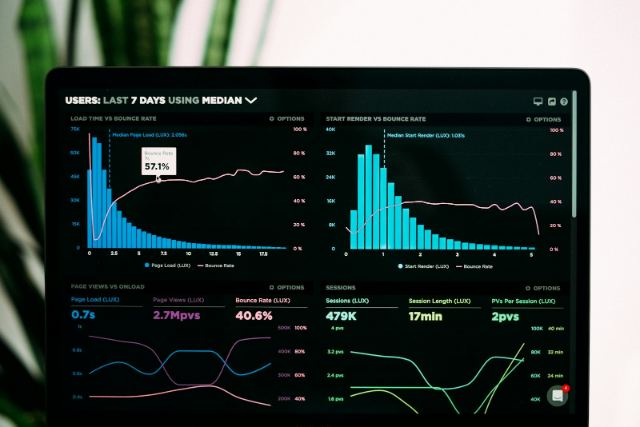

Build systems that run without you chasing them
Practical guides on CRMs, automation, and AI for teams tired of doing the same work twice.
Your CRM isn't broken. Your process is.
Most CRM rollouts fail for the same reason: they copy a messy process into new software. Here is how to fix the process first, so the CRM finally sticks.
Read the articleLatest articles

Stop chasing status updates. Automate the handoff.
Every "just checking in" email points to a handoff nobody owns. Here is how to make updates move on their own, so clients stop asking.
Five signs your team has outgrown spreadsheets
Spreadsheets are a great place to start and a costly place to stay. These five warning signs mean the workbook now costs more than it saves.

Where AI actually saves hours in a service business
Forget the demos. These are the four places AI earns its keep inside a real workflow, and the one place we tell clients to leave it out.
Not sure where your process leaks time?
A Systems Audit maps how your business runs today and shows exactly what to simplify, connect, and automate first.
Book a Systems Audit